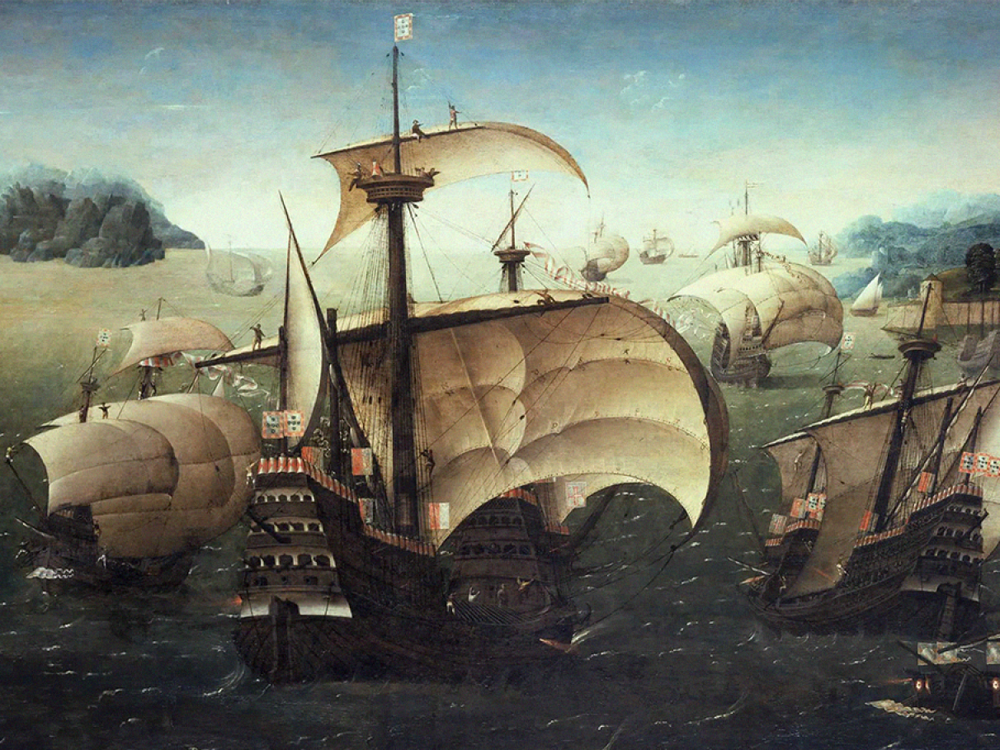

A Segunda Guerra Mundial foi o conflito mais sangrento da nossa história. De 1939 a 1945, milhões de pessoas perderam suas vidas no campo de batalha.
A política expansionista e militarista do nazifascismo provocou um novo conflito mundial. Aliados e Eixo disputaram durante seis anos a vitória na guerra.
O Brasil também participou de forma efetiva com as tropas aliadas. O final da Segunda Guerra Mundial trouxe grandes consequências para o mundo.
Para compreender as causas da Segunda Guerra Mundial, é preciso resgatar a forma como terminou a Primeira Guerra Mundial, em 1918.
O Tratado de Versalhes, assinado no ano seguinte, impôs severas sanções à Alemanha, que foi considerada a culpada pela guerra.
Os alemães saíram derrotados e humilhados do conflito. Além disso, a crise econômica de 1929, originada nos Estados Unidos, rapidamente se espalhou pelo mundo,
aprofundando ainda mais os países europeus, que, a muito custo, tentavam reerguer-se dos escombros da guerra.
"As consequências da Segunda Guerra Mundial são os principais acontecimentos relacionados à ocorrência dessa grande batalha.
Essa guerra mundial teve como principais consequências a derrota da Alemanha Nazista e libertação dos territórios por ela ocupados;"
"o fim dos campos de concentração e prisão de muitos dos oficiais nazistas; a polarização ideológica do mundo entre as democracias liberais, simbolizadas pelos Estados Unidos, e o comunismo, simbolizado pela União Soviética;"
"a fundação da Organização das Nações Unidas (ONU), com o objetivo de mediar conflitos internacionais e prevenir novas guerras em escala global."
Texto sobre a segunda guerra.
